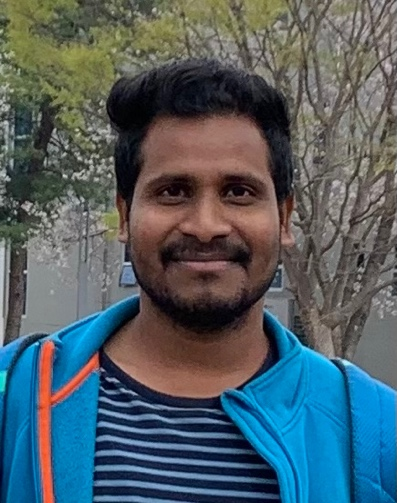

MAR 2026 — PRESENT
INDUSTRY · CURRENT
Senior Researcher
Intospace Co., Ltd. · Daejeon, South Korea
Research and engineering in an aerospace-industry environment, building on expertise in robotics, simulation, and control.
ROBOTICS RESEARCHER & ENGINEER
Hello, I'm Dr. Sivarathri Ashok Kumar
I work at the intersection of mobile robotics, computer vision, autonomous systems, and applied engineering — connecting research ideas with real-world robotic platforms.

01 / ABOUT ME
A LITTLE ABOUT MY WORK
I am a robotics researcher and engineer with a PhD in Robotics from the Indian Institute of Technology Mandi. My work focuses on making robots perceive, navigate, and collaborate effectively in dynamic environments.
During my doctoral research, I developed vision-based aerial–ground robotic systems and a unified kinematic framework for UAV–UGV collaboration. Today, I bring this systems-oriented research background to my role as a Senior Researcher at Intospace in South Korea.
02 / CAREER PATH
A foundation in mechanical engineering, advanced research in robotics, and hands-on development in industry.
INDUSTRY · CURRENT
Intospace Co., Ltd. · Daejeon, South Korea
Research and engineering in an aerospace-industry environment, building on expertise in robotics, simulation, and control.
INDUSTRY
Intospace Co., Ltd. · Daejeon, South Korea
Transitioned from doctoral research into applied engineering and aerospace-related industry work.
DOCTORAL RESEARCH
Indian Institute of Technology Mandi · India
Research on heterogeneous UAV–UGV systems, image-based navigation, vision-guided tracking, and mobile robot platforms. Thesis defended in August 2025.
POSTGRADUATE EDUCATION
Indian Institute of Technology Mandi · India
UNDERGRADUATE EDUCATION
Rajiv Gandhi University of Knowledge Technologies, Nuzvid · India
03 / RESEARCH FOCUS
My interests combine autonomy algorithms with the mechanical, electrical, and software systems that bring robots to life.
Vision-based UAV–UGV coordination, heterogeneous robot kinematics, aerial–ground tracking, and communication-independent navigation.
Visual tracking, obstacle avoidance, image-plane trajectory control, and robot navigation when direct communication or GPS is unavailable.
Design, fabrication, and ROS integration of independently steered and skid-steering platforms for mobility and logistics applications.
Robotic dynamics and control, AI/ML, system simulation, and HIL/SIL testing — with growing interest in aerospace and space mobile robots.
04 / SELECTED WORK
A selection of research and hardware development described in my CV. Project images and videos can be added later.
DOCTORAL RESEARCH · AUTONOMY
Developed strategies for aerial–ground cooperation, including UAV-guided UGV navigation and vision-based tracking without direct inter-robot communication.
ROBOT DESIGN · ROS
Designed and fabricated a 4WISD mobile platform with a 50 kg payload for indoor logistics; integrated ROS-based control for research experiments.
ROBOT HARDWARE · LOGISTICS
Designed and fabricated a four-wheeled skid-steering ground vehicle for shop-floor logistics and practical mobile robotics development.
Concept illustrations only; they are not photographs of the original robot prototypes.
05 / SCIENTIFIC OUTPUT
06 / MENTORSHIP
During my MS and PhD at IIT Mandi, I served as a Teaching Assistant across core mechanical engineering and robotics courses, and as an Associate Teacher for Engineering Drawing.
My teaching interests emphasize strong fundamentals, hands-on robotics, and connecting theory to real systems.
Associate Teacher: Graphics for Design (2022)
07 / TOOLKIT
Python · C++ · MATLAB · ROS
OpenCV · TensorFlow · Keras
LabVIEW · SolidWorks · ANSYS · COMSOL Multiphysics
Arduino · Raspberry Pi · NVIDIA Jetson · NI hardware
08 / GET IN TOUCH
I'm interested in research collaborations, robotics applications, and exchanging ideas with people working on intelligent autonomous systems.